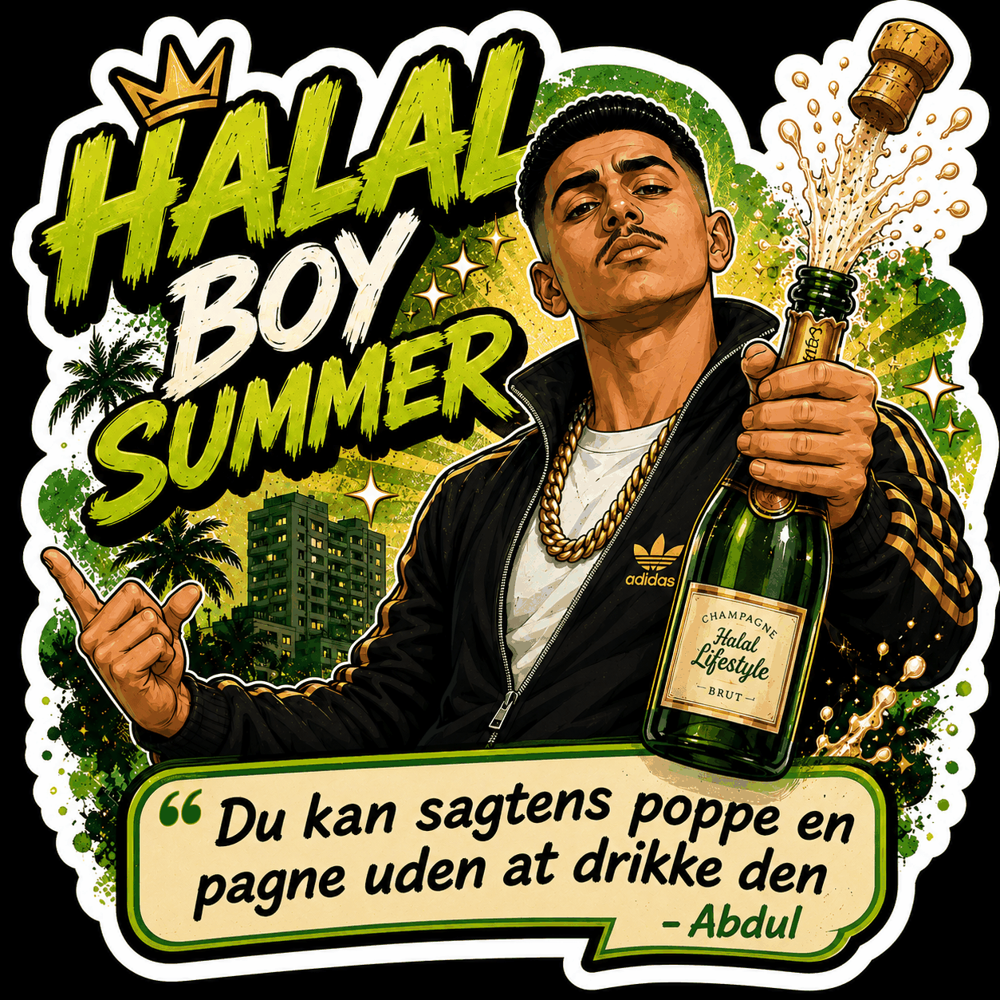
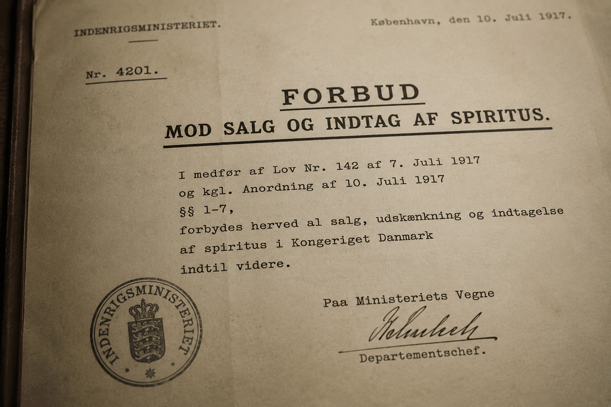
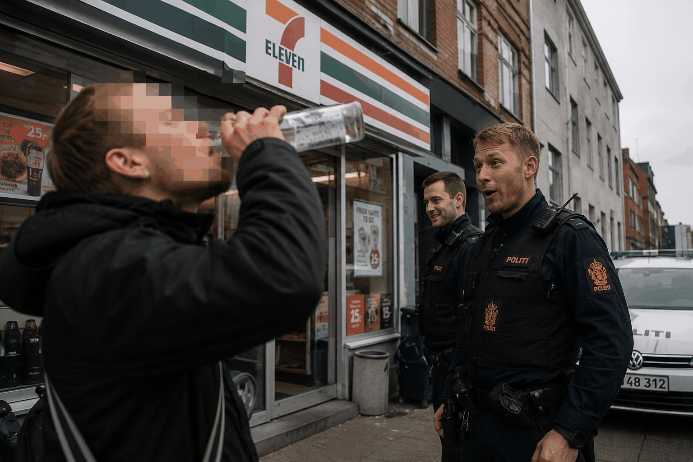
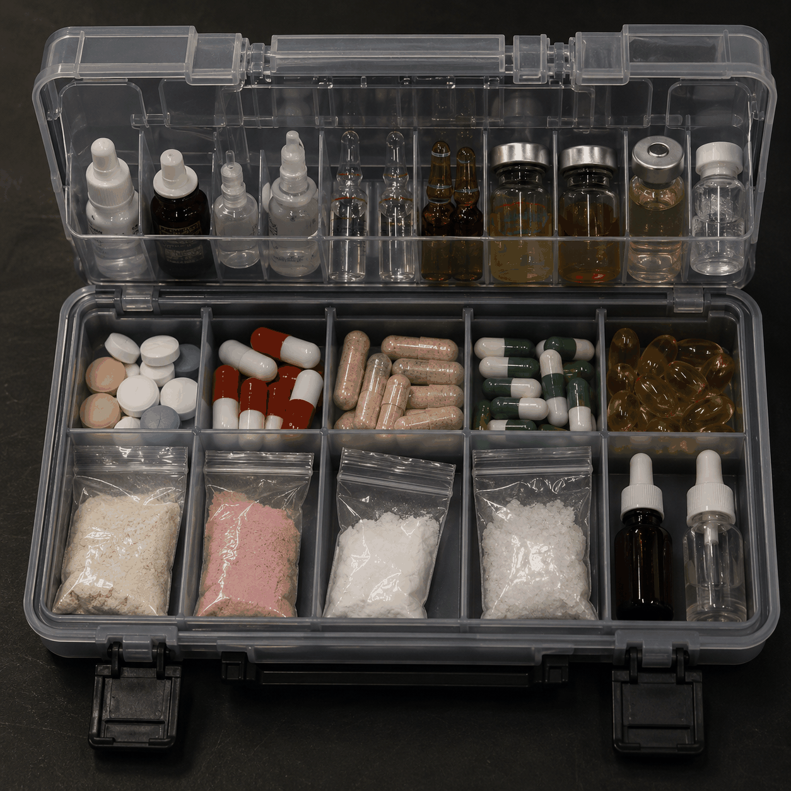

Den moderne fest handler ikke længere nødvendigvis om at blive så fuld, at man mister både sin telefon, sin værdighed og evnen til at udtale “Sønder Boulevard” efter midnat.
Flere yngre miljøer begynder i stedet at tale om energi som noget, der skal doseres rigtigt.
Den rigtige stemning til den rigtige oplevelse. Ikke bare industrielt fremstillede depressiver hældt ud over hele aftenen som en skandinavisk dåbstradition.
Det er her, Halal Boy Summer opstår.
Det handler om kuratering — ikke bare af musik eller gæstelister — men af stemninger.
Han ved nøjagtigt, hvad festen har brug for.

Danmark har et ekstremt forhold til alkohol.
I starten af 1900-tallet forsøgte afholdsbevægelser og politikere faktisk at begrænse eller forbyde alkohol, præcis som man så i USA og flere nordiske lande.
Under Første Verdenskrig indførte Danmark endda et kortvarigt spiritusforbud i 1917.
Men… Alkohol var allerede alt for integreret i dansk kultur, så staten gjorde det mest danske overhovedet: Man opgav kontrollen og begyndte i stedet at beskatte salget af det.
Sverige og Norge gik en anden vej.
Danmark valgte i stedet den liberale model: Her kan du købe vodka i Netto klokken 21:58 sammen med pitabrød og en energidrik på størrelse med et bilbatteri.
Politiet reagerer med “sygt nok”, hvis du bunder en vodka ude foran 7-11 om formiddagen.

Resultatet er en helt særlig dansk hybridkultur, hvor vi både drikker til hverdag og som om det er sidste nat på Titanic hver weekend.
Ingen andre rusmidler kunne overleve statistikkerne.
Vold.
Ulykker.
Afhængighed.
Hospitalsindlæggelser.
Mænd der forsøger at slås med dørmænd iført korteærmet skjorte fra Selected Homme.
Hvis et nyt stof blev opfundet i morgen og producerede samme adfærd som danske julefrokoster, ville det blive kategoriseret som en sikkerhedstrussel inden næste uge.
Alligevel omtaler vi alkohol som “hygge”.
Samtidig peger forskere igen og igen på, at alkohol samlet set er blandt de mest skadelige rusmidler, både for brugeren selv og omgivelserne.
Men prøv at sige nej til vin i København, og folk reagerer som om du lige har afvist demokrati.

Halal Boy Summer handler ikke nødvendigvis om haram og halal.
Det handler om kvalitetssikring.
Om at forstå, at ikke alle oplevelser kræver samme intensitet.
Nogle aftener skal være langsomme — psilosybin?
Nogle skal være varme — 2C-B?
Nogle skal være intime — GHB?
Nogle skal være filmiske på den måde, hvor alle pludselig ser lidt flottere ud i gadelamperne — MDMA?
Den gode Halal Boy forsøger ikke at ødelægge festen.
Han forsøger at redde den fra folk, der allerede er begyndt at råbe.
Han forstår timing.
Han forstår dosering.
Han forstår, at forskellige mennesker søger forskellige oplevelser, og at den moderne luksus måske ikke længere er maksimal påvirkning, men maksimal præcision.
Måske er det derfor, Halal Boy Summer føles så attraktiv lige nu.
Folk er trætte.
Trætte af tømmermænd.
Trætte af søndagspanik.
Trætte af at vågne med følelsen af at deres hjerne stadig står og vibrerer udenfor Den Anden Side klokken 09:40.
En hel generation er vokset op med stress, techno, datingapps, præstationsangst og nervesystemer der kører som en gammel Lenovo med 84 faner åbne.
På et tidspunkt bliver danskvand med citrus faktisk mere futuristisk end tequila.